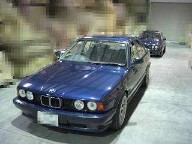 ボーベンさんの秘密基地に集合！
|
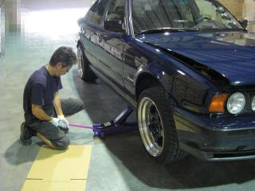 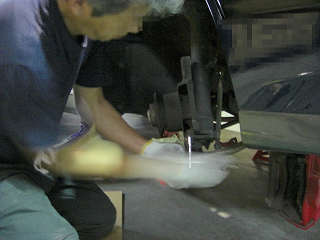 早速、作業の開始です＾＾ まずはジャッキＵＰしてウマで固定 タイヤ、ローター、キャリパーと・・・どんどん外れていきます。 え？写真撮ってないで手伝えって？（笑
|
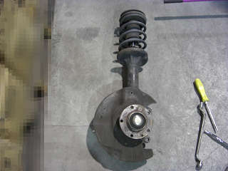 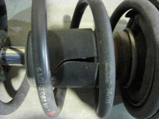 外れたストラット う～ん重い。。 お約束、バンプラバーはボロボロでした。。
|
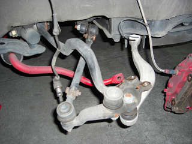 ストラットが外れた状態のアーム類 ブーツちぎれてなくて良かった。。
|
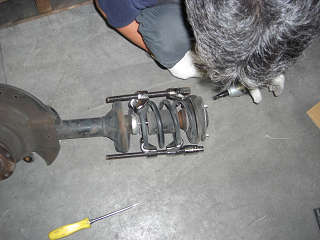 スプリングコンプレッサーを縮めるボーベンさん このスプリングコンプレッサーをラチェットで縮めるのが一つのしんどい所ですが、、 インパクトがあるとあっという間で＾＾
|
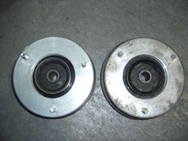 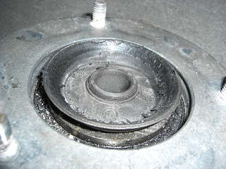 左：新品のマウント 右：外したマウント 外したマウント、一見劣化していないように見えるが・・・ 今回、アッパーマウントを交換したのには訳が。。 ちょうと1年前ぐらいだったか、、 その頃から轍や道路の継ぎ目で左右にふらふらする症状に悩まされていました。 雨の日なんかは特に最悪で、ひどい轍だと１車線「ポーン」と横に飛んでいってしまうこともありました。。 さすがに危ないのできっとブッシュが悪いんだろう。。 と、フロントのアーム、ブッシュを新品に総交換しました。。 他にもタイヤやブレーキローターを交換してみたり・・・ でも、あまりその症状は改善されず。。 その時は「タイヤが太いからなのかなぁ・・・」と半分諦めていました。 しかし、どこか納得できず考えること数ヶ月（笑 消耗品であと交換していないのはアッパーマウントだけということに気づいた（遅 アッパーマウントって高価なのでどうしても後回しになってしまう。。 そこでサスの入れ替えと同時に交換した。 さて、この選択は正解だったのでしょうか・・・？（後につづく |
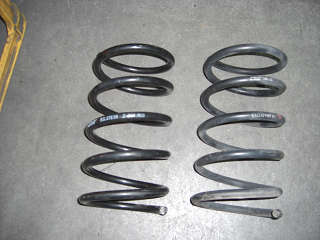 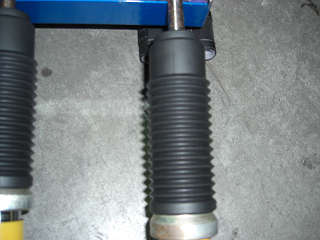 同じアイバッハ製のコイル ダストブーツはAPEXiの車高調（Ｎ１ダンパー用）が 左：BTS 右：外したザックス ビルの倒立式アブソーバーにぴったりのサイズだったので 全長もほとんど同じ。 それを取り寄せた。
|
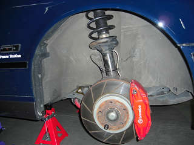 装着後の図＾＾ 左側は、自分でやってみよう！ってことでチャレンジ！その為画像はありません。。 組み上がったストラットを車体に取り付けるのが重くて難しかった(._.) ボーベンさんとといさんに手伝ってもらい取り付けれた。 これを一人でやっちゃうみなさんはすごいなぁ。。
|
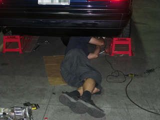 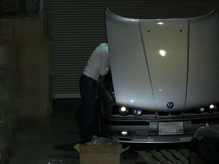 作業に目処がついたところでみなさん各自の作業を ボーベンさんは異音の追及 といさんはイグニッションコイルの交換＾＾ まるで整備工場のような状態に（笑
|
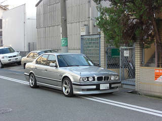 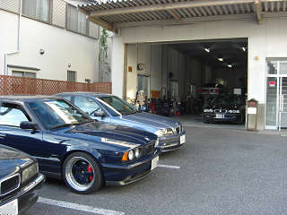 予定していた作業が全て終了したので、ボーベンさんとtake-Mさんへ そこにりゅうじさんが登場＾＾ しばらくウダウダしたところで帰りました。 （takeさんアドバイスありがとうございましたm(__)m） 肝心の交換後のインプレッションはというと・・・ 轍で左右にふらふら振られるのがかなり解消された！ 高速でのコーナーも今まで頼りなかったが、ピシッと決まる＾＾ （アブソーバーのおかげ？） 突き上げ感のあった細かい凹凸もどっしりとしたフィーリングになり◎ と良い感じだ＾＾/ もっと早くマウントも交換しておけば良かった。。 ゴムブッシュって見た目は良くてもやっぱり劣化していってるんですね。 ただ・・・ 一つ気になる所が。。 アッパーマウントとは関係ないけど、 ビルシュタインのアブソーバーってやっぱり低速での振動が目立つような・・・
|